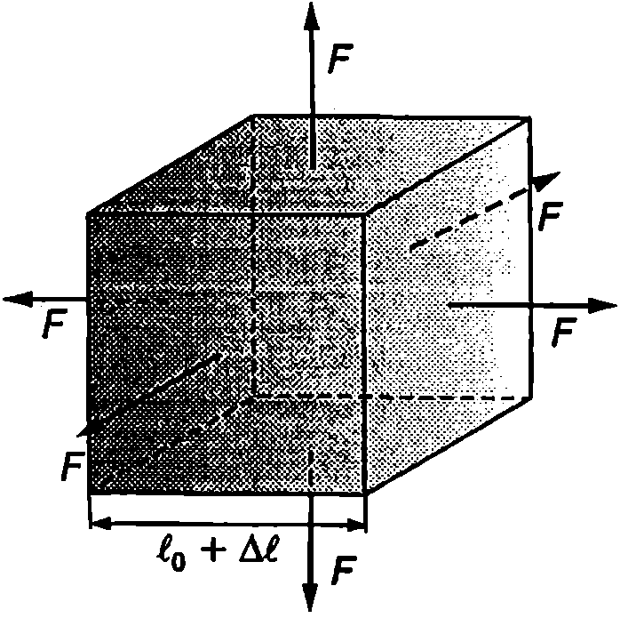
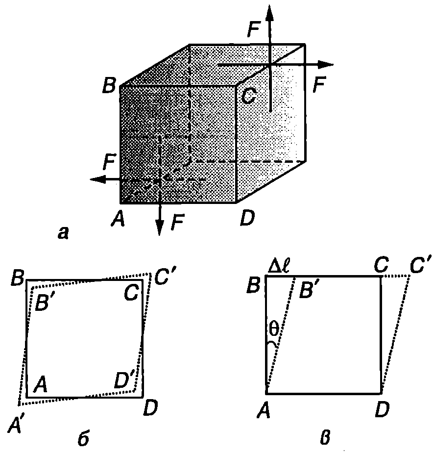
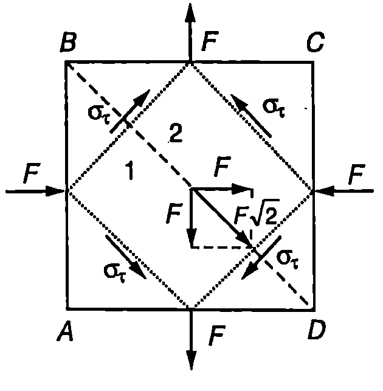
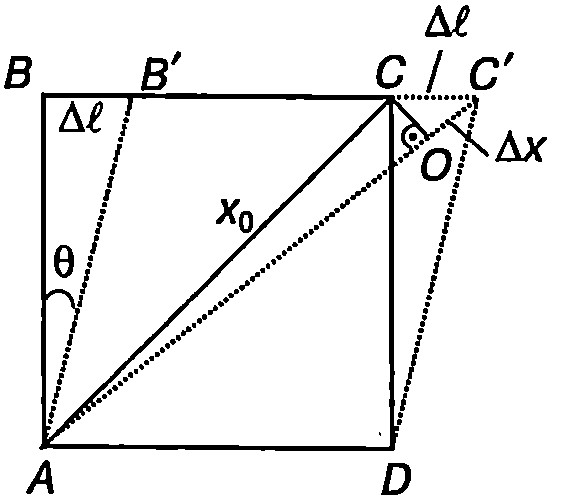
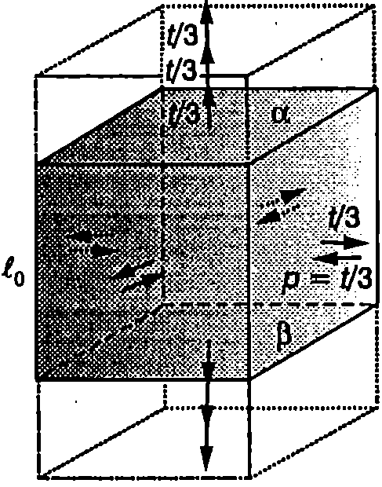
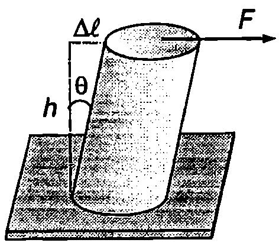

Всестранно свиване и разтягане
Да разгледаме куб с ребро (Фиг. \ref{fig:21.1}), перпендикулярно на стените на който са приложени еднакви по големина сили, стремящи се да го разтегнат (или свият). Ако сили те са разпределени равномерно върху повърхността на куба, в него възникват нормални напрежения на разтягане (или налягане р), които имат еднаква големина във всяко сечение, успоредно на някоя от стените на куба. Да означим с относителното изменение на обема на куба (относителна обемна деформация). Опитът показва, че при малки стойности на зависимостта на напрежението от относителната обемна деформация е линейна
При разтягане , а при свиване . Уравненията \eqref{eq:21.1} изразяват закона на Хук при деформации на всестранно разтягане или свиване. Те са в сила за еднородни и изотропни тела с произволна форма. Коефициентът на пропорционалност не зависи от формата и размера на тяло то и характеризира еластичните свойства на веществото. Нарича се модул на обемна еластичност. Обемна еластичност притежават както твърдите тела, така и течностите и газовете. Тъй като течностите и газове те нямат еластичност на формата, техните еластични свойства напълно се описват от модула на обемна еластичност.
Реципрочната стойност на модула на обемна еластичност се нарича коефициент на свиваемост. Той показва какво е относителното изменение на обема при изменение на налягането с 1 Pa
Стойностите на коефициентите на свиваемост за някои течности при стайна температура са дадени в таблица 21.1.
\begin{table} \centering \begin{tabular}{cccc} Етер& 1,8.& Вода& 4,6.\ Спирт& 1,1.& Глицерин& 2,5.\ Бензол & 8.7.& Живак& 3,9.\ \end{tabular} \caption{Коефициент на свиваемост за някои течности ().} \label{table:21.1} \end{table}
Ще покажем, че относителното изменение на обема при всестранно разтягане (или свиване) е три пъти по-голямо от изменението на линейните размери на тялото. Действително, при увеличаване на обема на куба от Фиг. \ref{fig:21.1} с реброто му се удължава с . Тогава
Тъй като относителната деформация е малка (), можем да пренебрегнем последните два члена в дясната страна на това равенство. Получаваме:
\begin{figure}[h!] \centering  \caption{} \label{fig:21.1} \end{figure}
Пример 21.1
Хидростатичното налягане в най-дълбоките места на световния океан достига 1 000 атмосфери ( Pa). Сравнете плътността на водата от морското дъно с тази от повърхността. \end{psexample}
Решение
Относителното изменение на плътността р на водата е равно на относителното изменение на нейния обем под действие на хидростатичното налягане. Заместваме коефициента на свиваемост на водата от табл. 21.1 във формула \eqref{eq:21.2} и получаваме
Следователно при такова голямо налягане (1000 atm е хидростатичното налягане на дълбочина 10 km) плътността на водата нараства само с около 5%, което показва колко трудно свиваеми са течностите. Това се дължи на големите сили на междумолекулно взаимодействие.
Хлъзгане
Хлъзгане се нарича такава деформация на твърдо тяло, при която всички негови слоеве, успоредни на дадена равнина, без да се изкривяват или да променят размерите си, се отместват (хлъзгат) един спрямо друг. Деформация на хлъзгане претърпява например еднороден куб, към който са приложени две двойки сили (Фиг. \ref{fig:21.2}а). Всички сили са равни по големина, успоредни са на съответната стена на куба и са разпределени равномерно по повърхността на стените. Общият въртящ момент на всички сили е нула, поради което кубът не се завърта или премества, а само се деформира. Опитът показва, че при деформацията обемът на куба практически не се изменя. Изменят се дължините на диагоналите АС и BD, докато изменението на дължините на ребрата на куба може да се пренебрегне, т.е. (Фиг. \ref{fig:21.2}б). Затова след деформацията можем да завъртим куба така, че стената A’D’ да съвпада с AD (Фиг. \ref{fig:21.2}в), а самата деформация да разглеждаме като хлъзгане един спрямо друг на всички слоеве, успоредни на основата AD. В резултат на хлъзгането между съседните слоеве възникват тангенциални еластични сили на взаимодействие и тангенциални еластични напрежения , където е площта на стената на куба. Деформацията на хлъзгане се характеризира с ъгъла (Фиг. \ref{fig:21.2}в), наречен ъгъл на хлъзгане. За малки ъгли на хлъзгане (Фиг. \ref{fig:21.2}в)
където е линейното отместване на двете срещуположни стени на куба една спрямо друга, а ъгълът се измерва в радиани. Опитно е установено, че при малки ъгли на хлъзгане, възникващите тангенциални напрежения са линейна функция от ъгъла на хлъзгане
Това уравнение изразява закона на Хук при деформация на хлъзгане. Коефициентът на пропорционалност характеризира еластичните свойства на веществото и се нарича модул на еластичност при хлъзгане.
От Фиг. \ref{fig:21.2}б се вижда, че всички слоеве, успоредни на диагонала на куба, са разтегнати, а успоредните на другия диагонал слоеве се свити. Доказва се, че деформацията на хлъзгане е еквивалентна на разтягане на тялото в дадено направление и едновременно с това свиване в перпендикулярното направление. В това се убеждаваме, ако разгледаме куб, подложен едновременно на разтягане и свиване в две взаимно перпендикулярни направления (Фиг. \ref{fig:21.3}). Да прекараме диагоналното сечение . Частта 1 от куба действа на частта 2 с еластична сила , насочена успоредно на диагоналното сечение, чиято площ е ( — площта на стената на куба). Съответното тангенциално напрежение е
\begin{figure}[h!] \centering  \caption{} \label{fig:21.2} \end{figure}
където и са напреженията на разтягане и налягане. Същите по големина тангенциални напрежения възникват и в другото диагонално сечение , както и във всяко сечение, което е успоредно на
\begin{figure}[h!] \centering  \caption{} \label{fig:21.3} \end{figure}
или . Затова, ако мислено изрежем по-малък куб със стени, успоредни на диагоналните сечения на големия куб, останалата част от големия куб ще му действа с тангенциални еластични сили (Фиг. \ref{fig:21.3}), които ще предизвикат деформация на хлъзгане.
И така, деформацията на хлъзгане може да се представи като суперпозиция на две независими деформации на разтягане и свиване, извършващи се във взаимно перпендикулярни направления. Нормалните и тангенциалните напрежения, предизвикани от тези деформации, са равни по големина.
Ще докажем, че относителното удължение или скъсяване на тялото в направление на действието на силите на опън или натиск е равно на половината от ъгъла на хлъзгане (слоевете, които се хлъзгат, сключват ъгъл със силите )
При опъване дължината на диагонала АС нараства с (Фиг. \ref{fig:21.4}). За малък ъгъл на хлъзгане в можем да приемем, че ъглите на успоредника AB’C’D са приблизително равни на и (Фиг. \ref{fig:21.4}). Тогава: . От друга страна, .
Заместваме и в уравнение \eqref{eq:21.4} и получаваме
Връзка между еластичните модули
\begin{figure}[h!] \centering  \caption{} \label{fig:21.4} \end{figure}
За количествена характеристика на еластичните свойства на еднородните и изотролни твърди тела са достатъчни две независими макроскопични величини. Удобно е за такива да се изберат модулът на Юнг и модулът на еластичност при хлъзгане , които най-лесно се определят експериментално. Ще докажем, че модулът на обемна еластичност и коефициентът на Поасон могат да се изразят чрез еластичните модули и . За целта ще разгледаме еднородна разтегната пръчка, чието напречно сечение в квадрат. Нека и са две напречни сечения (Фиг. \ref{fig:21.5}), които отделят от пръчката куб с ребро в. Останалата част от пръчката действа на двете срещуположни стени на куба с напрежения на опъване и предизвиква деформация на разтягане, която се определя от закона на Хук . Да разложим напрежението на три еднакви напрежения . Нека освен това мислено да приложим към останалите стени на куба напрежение на опъване и едновременно с това същото по големина налягане (Фиг. \ref{fig:21.5}). При това действителното състояние на деформация на пръчката не се изменя, тъй като двете равни по големина напрежения (на опъване и налягане) имат противоположно действие и взаимно се компенсират. Използваният подход обаче ни дава възможност да представим действителната деформация на пръчката като суперпозиция от три независими еднородни деформации:
\begin{figure}[h!] \centering  \caption{} \label{fig:21.5} \end{figure}
- Всестранно разтягане под действие на напрежението , приложено към цялата повърхност на пръчката (Фиг. \ref{fig:21.5}). От уравнения \eqref{eq:21.1} и \eqref{eq:21.3} следва, че относителното удължаване на пръчката в резултат на всестранното разтягане е
-
Напреженията на опъване в сеченията и и налягането върху лявата и дясната стена на куба предизвикват деформация на хлъзгане (вж. Фиг. \ref{fig:21.3}). Както вече беше отбелязано, хлъзгащите се един спрямо друг слоеве сключват ъгъл с направлението на силите на опъване и налягане. Относителното удължение на пръчката в направление на опъващите сили се изразява с формула \eqref{eq:21.6}, в която ще заместим ъгъла на хлъзгане от закона на Хук \eqref{eq:21.5} за деформация на хлъзгане Същата по големина относителна деформация, само че на напречно свиване, възниква в направление на силите на налягане, действащи върху лявата и дясната стена на куба.
-
Аналогична деформация на хлъзгане ще предизвикат оставащата една трета от напрежението на надлъжно разтягане на пръчката и налягането върху предната и задната стена на куба. В резултат на това хлъзгане пръчката ще получи още едно относително удължение в надлъжно направление и същото по големина напречно свиване от предната към задната стена.
И така, пълната относителна деформация на разтягане на пръчката е
откъдето получаваме
Големината на действителното относително свиване в напречно направление ще получим, като от големината на относителното свиване извадим относителното удължаване при всестранното разтягане. Относителното изменение на напречния размер (на дължините на страните на квадратните напречни сечения и на пръчката) е
където сме отчели уравнения \eqref{eq:20.6} и \eqref{eq:20.7}.
След съкръщаване на получаваме
Уравнения \eqref{eq:21.7} и \eqref{eq:21.8} дават връзката между еластичните модули. От \eqref{eq:21.7} непосредствено се определя модулът на обемна еластичност (или коефициентът на свиваемост ), ако са известни модулът на Юнг и модулът на хлъзгане . От двете уравнения се изразява коефициентът на Поасон
Едностранно разтягане и свиване
В \ref{sec:20} разгледахме разтягането и свиването на пръчка, върху околната повърхност на която не са приложени никакви сили. При разтягане напречното сечение на пръчката намалява, а при свиване-нараства. Нека сега да предположим, че пръчката се разтяга или свива в условия, които не позволяват да се изменят нейните напречни размери. Такава деформация се нарича деформация на едностранно разтягане (или свиване). Законът на Хук в този случай се изразява с уравненията
Първото уравнение описва едностранното разтягане, а второто едностранното свиване. Коефициентът на пропорционалност характеризира еластичните свойства на веществото и се нарича модул на еластичност при едностранно свиване (разтягане). Той също се изразява чрез останалите еластични модули. Например може да се докаже, че
От еластичния модул зависи скоростта, с която се разпространяват надлъжните механични вълни в неограничена твърда среда. Ако мислено изрежем от средата дълъг цилиндричен слой, чиято ос съвпада с посоката на разпространение на вълната, вълновият процес ще се изразява в перодично едностранно свиване и разтягане на слоя, тъй като околната среда възпрепятства изменението на напречните му размери.
Еластична енергия
Всички разгледани досега еластични деформации са еднородни. Това означава, че напреженията и обемната плътност на енергията във всеки произволно избран елемент от тялото са еднакви. Доказва се, че обемната плътност на енергията се изразява с аналогични на \eqref{eq:20.12} и \eqref{eq:20.13} формули, които изведохме за случая на разтегната или свита пръчка. Необходимо е само модулът на Юнг да се замени с еластичния модул, характеризиращ съответния вид еднородна деформация. Например обемната плътност на енергията при деформация на всестранно разтягане или свиване се изразява съответно с формулите
Обемната плътност на енергията при деформация на хлъзгане е
Задачи
-
Плътно оловно кълбо с обем е потопено на дъното на океана, където налягането е N/m. Определете изменението на обема на кълбото. Еластичният модул на всестранно свиване за оловото е N/m.
-
Плътен меден куб с ръб mm се подлага на всестранно свиване. При какво налягане дължината на реброто му става mm? Модулът на еластичност при всестранно свиване за медта е N/m.
-
Долната основа на алуминиев цилиндър с диаметър cm и височина cm e закрепена неподвижно, а към горната основа е приложена тангенциална сила kN (Фиг. \ref{fig:21.6}). Определете:
\begin{figure}[h!] \centering  \caption{} \label{fig:21.6} \end{figure}
а) тангенциалното напрежение в материала на цилиндъра;
б) ъгълът на хлъзгане ;
в) еластичната енергия на деформация на цилиндъра,
Модулът на хлъзгане за алуминия е Pa.
-
Метален детайл, направен от материал с модул на Юнг и модул на хлъзгане , в подложен на всестранно свиване под действие на външно налягане . Определете относителното изменение на обема на детайла.
-
Като използвате уравнения \eqref{eq:21.8}, \eqref{eq:21.9} и \eqref{eq:21.11} изразете еластичния модул на едностранно разтягане чрез модула на Юнг и модула на хлъзгане .
-
Докажете, че стойността на коефициента на Поасон за всички материали е по-малка от 0,5 ( < 0,5).
Указание. Изразете плътността на еластичната енергия при деформация на едностранно свиване и чрез модула на Юнг и коефициента на Поасон .